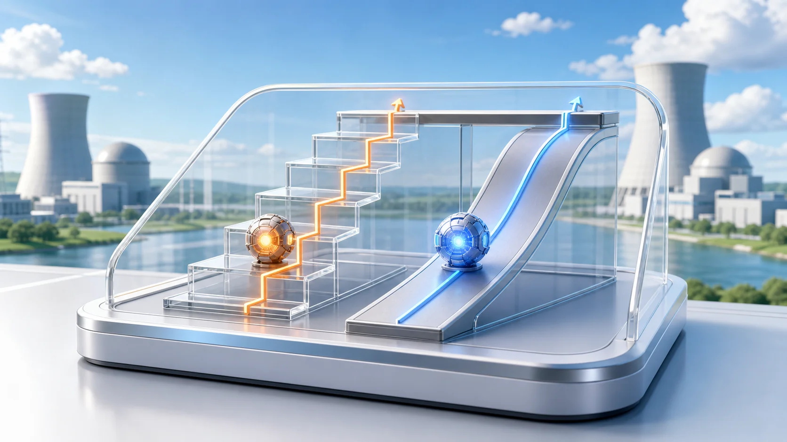
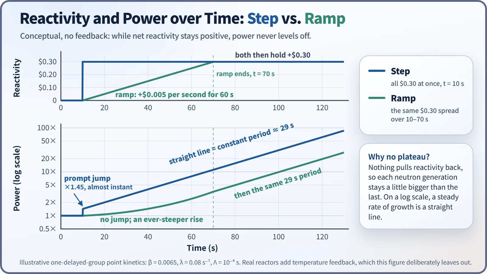

Reactor Kinetics & Reactivity · 112
Elevator or Escalator? — Step and Ramp Changes in Reactivity
A step makes power jump and then settle to one rate of rise; a ramp gives no jump and a rise that keeps getting steeper.

Reactivity can change as a step, jumping to a new value at one moment and holding there, or as a ramp, changing steadily over time. The shape of that cause decides the shape of the power response: a step produces a prompt jump and then settles to one fixed rate of rise, while a ramp produces no jump and a rise that keeps getting steeper while the ramp lasts.
Two ways up to the next floor
Walk into an office lobby and you usually find two ways up. The elevator doors close, there's a "ding," they open, and you are already on another floor: no visible journey, just the result. The escalator carries you upward continuously, a little at a time. Same destination, completely different way of getting there.
A reactor's reactivity, the number that says how far the core is from a perfectly balanced chain reaction, changes in exactly these two ways. This article asks what shape the change in reactivity itself takes over time. The two basic answers are a step and a ramp.
The step and the ramp
In a step change, reactivity changes by a certain amount at a single moment (ideally, instantaneously) and then stays at the new value: flat, a vertical jump, flat again. Like the elevator, there is only "before" and "after," with essentially no time spent in between.
In a ramp change, reactivity keeps increasing (or decreasing) in proportion to time over a certain period: a straight diagonal line with a constant slope. Like the escalator, the value passes through every point in between, changing smoothly at a set pace called the reactivity insertion rate.
| Step | Ramp | |
|---|---|---|
| Reactivity in time | ρ(t) = ρₛ · H(t − t₀): jumps at t₀, then constant | ρ(t) = a · (t − t₀): grows at constant rate a (e.g. dollars per second) |
| Prompt jump in power | Yes | No |
| Rate of power rise | Settles to one fixed doubling time | Keeps increasing while the ramp lasts |
| Typical real example | Approximation for very fast hypothetical events | Normal rod motion, boron dilution |
A different shape of cause, a different shape of result
With a step, the extremely fast response of prompt neutrons, those released immediately at fission, makes power leap to a new value straight away. This leap is the prompt jump. Then comes a gentler rise governed by the decay of precursors, the fission products that release delayed neutrons a little later. Because the reactivity no longer changes after it has been added, that rise settles toward one constant pace, a single fixed doubling time.
With a ramp, reactivity never breaks off anywhere, so there is no sudden edge for the prompt neutrons to respond to. Power shows no leap; it rises along one continuous curve. And because reactivity keeps growing during the ramp, the pace at which power increases keeps speeding up: the slope of the power curve keeps getting steeper while the ramp lasts.

Which one does a real reactor look like?
Almost all normal operation is closer to a ramp. Withdrawing or inserting control rods at a steady speed, and diluting or concentrating the boric acid in the coolant at a set rate (boron dilution and boration), keep reactivity changing slowly at a steady pace. Even at a steady rod speed the rate is not perfectly constant, since a rod's effect varies with its position in the core, but these are the closest everyday examples of an idealized ramp. Operations are done slowly so that the rate of power rise stays at a level operators and control systems can follow in real time.
A perfect step does not exist, because every physical action takes some time. But when that time is extremely short compared with normal operations, the standard approach is to approximate it as a step. Examples are certain hypothetical scenarios classified in nuclear safety as reactivity-initiated accidents, such as a control rod suddenly being expelled because of a mechanical failure. Specific insertion times and classification criteria differ between licensing documents and analysis codes. Multiple layers of design and safety measures exist to prevent such events, and safety analysis conservatively assumes even these cases to confirm that the core stays within safe limits.
Common points of confusion
"A step is a big change and a ramp is a small one." No. The dividing line is the profile in time, not the size. A tiny amount of reactivity added instantly is a step; a large amount spread over a long enough time is a ramp.
"A ramp is just a step with a smaller prompt jump." In principle a ramp shows no jump at all, because reactivity has no sudden break to begin with.
"Real operations are perfect steps or perfect ramps." They are neither. The two idealized models make complex behavior mathematically manageable and allow conservative evaluation.
Why the distinction matters
Operating procedures and technical specifications put multiple limits on control rod withdrawal speed and boron dilution rate (the actual limits differ from plant to plant), so that reactivity changes as a slow ramp and power rises at a pace people and control systems can follow. Safety analysis likewise sorts reactivity insertion events into accident categories by their time profile and checks each with conservative assumptions.
Key takeaways
What shape the change in reactivity takes matters as much as how much it changes. A step gives a prompt jump and then one fixed rate of rise; a ramp gives no jump and a rate of rise that keeps increasing. Normal operation is mostly ramp-like; only rare, hypothetical accident scenarios are approximated as steps.